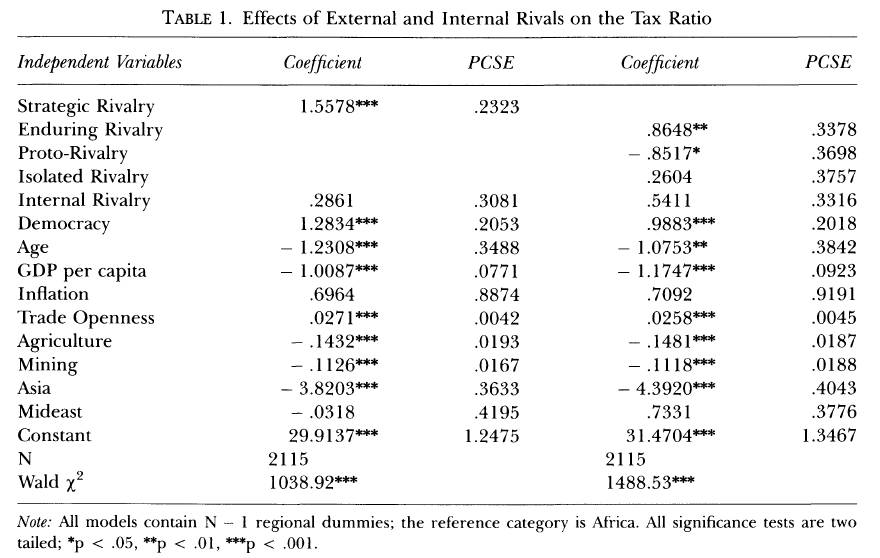
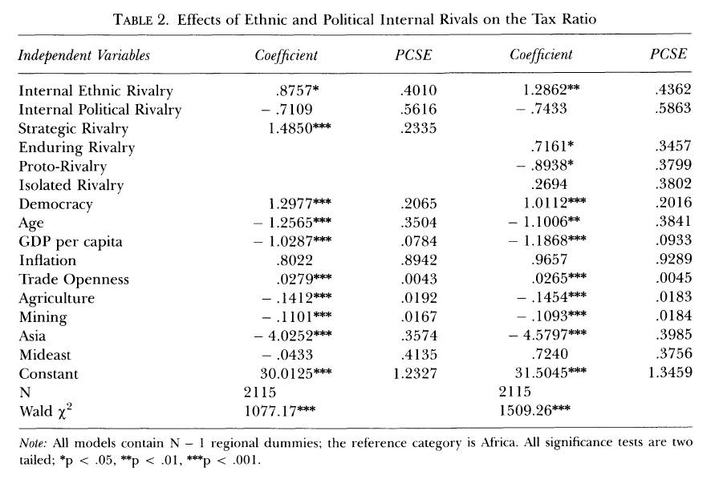

收录于合集
#比较政治学 121 个
#国家建构与国家发展 70 个
文献来源：Cameron G. Thies, “State Building, Interstate and Intrastate Rivalry: A Study of Post-Colonial Developing Country Extractive Efforts, 1975-2000,” International Studies Quarterly , Vol. 48, No.1 (March 2004), pp.53-72.
作者简介： Cameron G.Thies，美国亚利桑那州立大学政治与全球研究学院院长、教授，研究兴趣包括国家建设、国际贸易、国际关系和比较政治等，个人介绍见https://pgs.clas.asu.edu/content/cameron- thies-1
导语
本文试图理解国家建设、国际竞争和国内竞争之间的关系。既有的国家建设研究主要关注的是欧洲经验，对于发展中国家的案例仅是有选择性的适用。国际竞争的主要研究聚焦于它们对国家关系的影响。本文试图扩大这两类文献的解释范围。本文研究国际和国内竞争者对于国家建设的核心——财政政策的影响能够有效地从社会中汲取税收的国家更适合于与外部对手竞争。汲取的有效性很大程度上取决于统治者与内部竞争对手关于税收的议价能力，以换取免受外部对手威胁的保护。因此，国家缔造、汲取、保护和战争发动的过程都是国家建设事业的不可或缺的部分。
国家建设过程的知识大多是理论上的，并且源于对欧洲历史的理解。本文回顾了这类文献以及它在发展中国家文献中的延伸，并检验核心假设：内部和外部竞争者显著影响发展中世界国家的汲取能力。
发展中世界国家财政政策的实证分析产生了一些有趣的发现，关于竞争对手对于国家建设的影响，1975至2000年间的83个后殖民发展中国家。与欧洲文献相一致，在后殖民发展中国家，外部的竞争对手增加国家汲取税收的能力。乍看之下，内部竞争对手并没有对国家的汲取努力产生重要影响；但是，当内部的竞争对手被分解为种族挑战者和政治挑战者时，很明显的是，前者与汲取存在积极关系，后者则无关紧要。尽管发展中国家通常被认为在政治和财政能力上相对薄弱，这些发现表明，最终形成欧洲强大国家的同一过程可能在后殖民发展中世界的早期阶段也起了作用。
国家建设的理论范式
国家形成和国家建设的两种主要解释是契约理论和掠夺或剥削理论。契约理论通常是经济学家的领域，他们试图阐述产权形式应有助于经济增长。掠夺理论将国家视作某些群体或阶级的代表，从控制的更广的群体成分中汲取税收。虽然国家建设可能有很多含义，但是它最基本的涉及到国家为了资源汲取而进行的社会渗透。税收，或者汲取，是国家在追求其他目标之前的中心任务。国家建设的掠夺理论总是考虑到内部竞争者和外部竞争这两个方面对于统治者为了汲取目的控制特定领土和人口的能力的影响。掠夺理论的社会科学家对于欧洲国家发展存在一个共识。统治者面对外部和内部竞争者。这些威胁要求统治者从被统治者中汲取资源来与外部竞争者作战并安抚内部竞争者。汲取过程涉及到统治者和不同群体间的讨价还价。但是这种模式适用于发展中世界吗？国家建设的主要文献对于发展中世界在20世纪的经历是否类似于欧洲16或17世纪的环境产生了分歧。但是，大多数关于发展中世界国家建设的讨论仍然认为掠夺理论是它们的参照。
发展中世界的适用性
许多学者认为现代发展中国家本质上是在复制现代早期欧洲的经验，特别是关于外部和内部竞争者对于汲取努力的影响。不断增加的汲取活动的推动力是国家缔造和战争的发生。许多学者认为发展中国家增强汲取能力的努力是失败的，因为过去几个世纪国际环境的变化改变了内部和外部竞争者对国家的影响。条件的变化可能会阻止发展中国家以类似于现在早期欧洲的方式产生强大国家。威胁性外部环境的缺失有助于解释某地区不存在强大的国家以及无效的财政官僚制和税收系统。
已经证明，多民族国家的统治是更加困难的。内部竞争者是许多发展中国家面临的最为紧迫的问题。由于许多国家无法容纳更多的政治参与和更平等的国民收入分配的要求，结果往往是由单一民族主导国家并试图控制其他竞争集团。国内竞争者对于国家汲取能力的影响有利有弊。一方面，国家为了镇压内部挑战必须筹集足够的税收，这对汲取能力可能产生积极影响；另一方面，除了镇压行为，国家可能与内部竞争者讨价还价，通过减轻税负来维持统治，这对汲取能力可能产生消极影响。
数据方法和分析
本文考察了从1975年到2000年，二战后独立的撒哈拉以南非洲、中东和北非以及亚洲的83个国家的数据，以税率为因变量，以外部竞争（战略性竞争、持续性竞争）、内部竞争（种族竞争、政治竞争）为自变量，以民主水平、历史、人均GDP、通货膨胀率、贸易开放度、农业发展水平、矿业发展水平等为控制变量。


总的来说，这些模型展示了二战以来新兴国家的国家建设的惊人图景。首先，外部竞争刺激了国家汲取能力的提高。这一发现与外部竞争的操作性定义无关，因为战略性竞争和持久性竞争都激起了国家的相同反应。外部竞争可能在现代后殖民国家的发展中扮演着与战争在现在早期欧洲国家形成过程中的相同角色。这一证据支持了国家掠夺理论。第二，内部竞争对于国家汲取努力具有两种不同的影响。种族挑战者实际上刺激了汲取的增长，而国家的政治挑战者对国家的收入份额没有显著影响。这一内部竞争画面比文献中所描述的更加复杂。而大多数发展中国家的学者认为内部竞争是国家建设的明确阻力。正如掠夺理论所期望的那样，国家的外部竞争和内部竞争都对国家汲取具有重要影响。
结论
外部的竞争对手和内部的种族竞争者促使国家增加对于社会的税收汲取，而内部的政治对手则对这一过程没有影响。大部分的后殖民发展中国家面对着所有这些类型的竞争者，但是为何它们并没有发展成为强大国家呢？有以下几种可能的解释。第一，首先，尽管外部竞争促进了国家的汲取，但它可能不会直接造成与战争等同的威胁。正如掠夺理论的学者所指出的，在国际环境中这些国家已经习惯了，诉诸国家间战争和领土扩张是被国际惯例所禁止的，并被国际组织及其成员，尤其是大国强制执行。现代早期欧洲国家的战争活动并没有受到这些类型的约束。因此，尽管敌对状态造成了一定程度的外部威胁，这种关系可能不会造成类似于战争对于汲取能力的影响。外部竞争可能会促进国家规模的增长，但这一过程可能需要比发动战争花费更长的时间。
第二，这些发展中国家相对年轻，最多只有半个世纪的历史。许多学者强调，塑造这些国家的许多内部暴力与现代早期欧洲相似，可能最终通过国家缔造活动产生更高层次的政治秩序来解决。本研究发现，以种族为基础的内部冲突似乎给国家提供了提高汲取能力的机会。尽管这种国内冲突的性质令人讨厌，尽管国际规范谴责种族压迫和种族灭绝，这种行为似乎复制了许多欧洲国家经历的国家缔造过程。
国际战争是增加汲取的一种办法，但是所有的后殖民发展中国家也必须考虑和平时期实现税收汲取最大化的其他方式。外部竞争，偶尔接近战争水平的间断性冲突，可能是动员资源汲取的一种途径。但是，这种在发展中世界的国家建设方式将会更慢，也更难以让发达国家和国际发展机构所接受。被二战后初期的现代化理论及其在1990年代的复兴所激励的关于国家建设的乐观态度，可能最终让位于残忍现实——国家建设是一项长期的、令人不快的事业。
政观编辑部